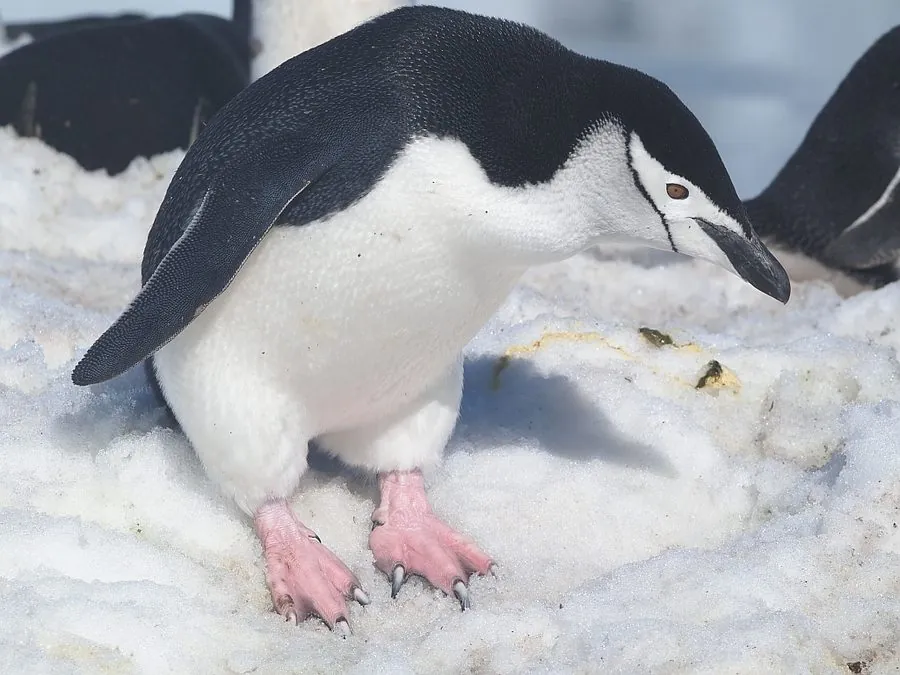

鸟类 · 动物界
帽带企鹅 Pygoscelis antarcticus

南极半岛及亚南极岛屿的中型企鹅，白色面部下方有一条黑色细纹，像戴着帽带，以磷虾为主食，繁殖群规模庞大。
- 分类
- 门脊索动物门纲鸟纲目企鹅目科企鹅科属阿德利企鹅属
- 栖息环境
- 南极半岛及亚南极岛屿的无冰岩坡和海岸
- 地理分布
- 南极半岛、南设得兰群岛、南奥克尼群岛和南桑威奇群岛
- 保护级别
- IUCN 无危（LC）；非中国分布物种
物种志
帽带企鹅体长 68–77 厘米，体重 3.5–5 千克。它的背部和头顶黑色，面部白色，下巴下方有一条黑色细纹绕过脸颊，像帽子的系带，因此得名；脚呈粉红色，眼睛红色。
帽带企鹅繁殖于南极半岛、南设得兰群岛、南奥克尼群岛和南桑威奇群岛，是南极数量最多的企鹅之一。它以磷虾、小鱼和乌贼为食，能潜入水下数十米捕食。繁殖季在无冰的岩石坡地上用石子筑巢，每窝产 2 枚卵，由双亲轮流孵化 33–35 天。雏鸟长着灰色绒羽，约 2 个月后离巢。成年企鹅每年换羽一次，换羽期间无法下水觅食。帽带企鹅种群总体稳定，被列为无危，但磷虾渔业和气候变化可能影响其食物供应。
形态与习性
- 食性磷虾、小鱼与乌贼
- 体长68–77 cm
- 体重3.5–5 kg
- 繁殖每窝 2 枚卵，孵化 33–35 天
- 寿命15–20 年
- 特征面部白色，下巴有黑色细纹
趣味知识
- 帽带企鹅下巴有一条黑色细纹，像帽子的系带。
- 它是南极地区数量最多的企鹅之一。
- 帽带企鹅用石子筑巢，双亲轮流孵化两枚卵。
生态关系
- 捕食 ← 虎鲸 南极虎鲸的猎物